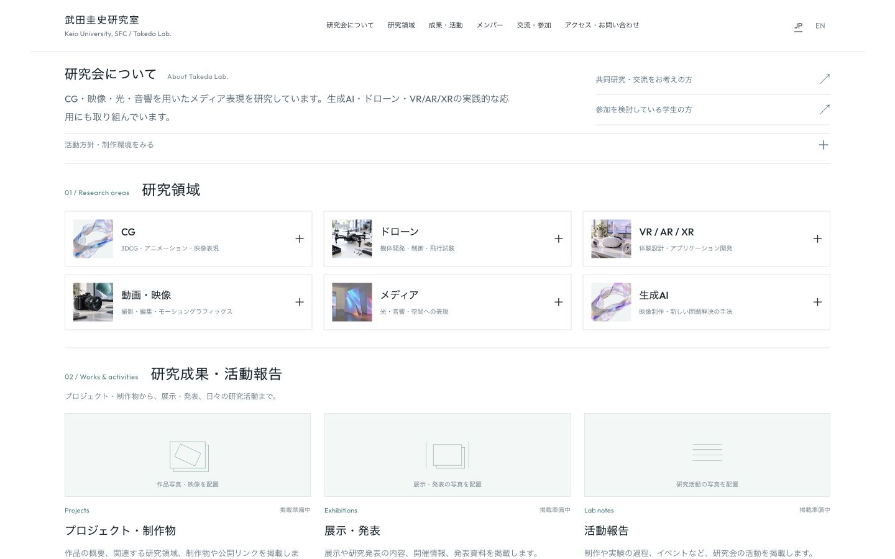
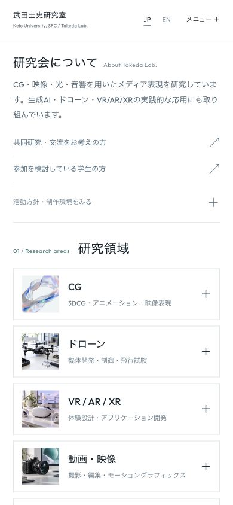

Dトップビジュアルなし
概要・研究領域・成果から始まる案。本文幅、セクション間隔、写真枠の大きさを調整しました。
PC / 1440 × 900

Mobile / 390 × 844

ここはスクリーンショットです。実際のデザインではページ下部まで確認できます。大きなトップビジュアルを設けず、研究会の情報から始まる案です。
概要・研究領域・成果から始まる案。本文幅、セクション間隔、写真枠の大きさを調整しました。


ここはスクリーンショットです。実際のデザインではページ下部まで確認できます。大きなトップビジュアルを設けず、研究会の情報から始まる案です。